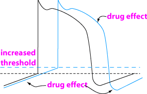

Class 1 antiarrhythmics - Sodium channel blockers
Can be subclassified on receptor kinetics - class 1b interact with sodium channels and dissociate again in less than 1 sec, class 1a 1 - 10 secs, class 1c > 10 secs.

Effects
Decreased slope of phase four, increased firing threshold (reduced automaticity),
increased effective refractory period. The action potential may be either slightly
prolonged or slightly shortened. Action potentials triggered by after depolarisations
are inhibited.
Effects on animals will vary according to the heart rate, the tissue and its
health (in general, these drugs have a greater effect on diseased tissue). This
means that class 1 drugs can have a wide range of effects.
Quinidine is mainly used in horses because it is cheap enough
to give horse size doses. It is used in supraventricular arrhythmias especially
atrial fibrillation.
Quinidine has a short half life in dogs and cats so is not much use for maintenance.
It is poorly tolerated by dogs.
Side effects and toxicity
•anorexia, vomiting, diarrhoea
•QRS duration and Q-T intervals are increased - if there is a 50% increase in the QRS then remove drug promptly ie. need to monitor with ECG
•ventricular arrhythmias - increase in Purkinje fibre automaticity
•sudden death due to ventricular fibrillation is possible
All these are potentiated by hypokalaemia.
Contraindications
myasthenia gravis, complete A-V block, intraventricular conduction defects,
symptoms of digitalis toxicity
Care is required in acid-base disorders, hypokalaemia, hypoxia, and renal or
liver insufficiency
Interactions
increases digitalis plasma levels - displaces digoxin
from skeletal muscle binding and reduces digoxin plasma clearance
increased chance of arrhythmias with diuretics which induce hypokalaemia, ie
frusemide and thiazides.
Procainamide is effective against ventricular tachyarrhythmias and was used primarily for these but may be effective against supraventricular arrhythmias in high doses. It can be given iv or as sustained release tablets (short t1/2 of 2.5 - 4.7 hours therefore require either an iv infusion or sustained release). Side effects are similar to quinidine. Higher concentrations decrease myocardial contractility and produce hypotension. Care in renal disease - reduce dose. No longer available in NZ.
Lignocaine (lidocaine USAN) is used in life threatening ventricular arrhythmias, particularly v. tachycardia and v. premature complexes. Do not use lignocaine with adrenaline - this is only for local anaesthetic use.
Pharmacokinetics
Absorption - onset of action after iv injection is within 2 minutes
and duration of 10-20 minutes
Distribution - rapidly redistributed into highly perfused organs -
heart failure may decrease the volume of distribution (Vd is about 4.5 l/kg
in the dog)
Metabolism - short half life - 90 - 100 minutes - rapidly metabolised
by the liver to active metabolites. This may be prolonged by liver disease or
poor hepatic perfusion ie. cardiac disease. If given po, lignocaine is 100%
metabolised on the first pass through the liver.
Elimination - less then 10% of a parenteral dose is excreted unchanged
in the urine
Side effects and Toxicity
CNS effects - drowsiness, emesis, nystagmus, muscle twitching and seizures -
can be very severe in the cat
methaemoglobinuria especially in cats
Treat by withdrawing drug; may need to use diazepam or barbiturates for seizure
control as well.
Contraindications
severe SA, AV, or intraventricular heart block
caution in patients with liver disease, congestive heart failure, shock, hypovolaemia,
respiratory depression or hypoxia
Tocainide and mexilitine are similar to lignocaine
but longer acting and are designed to avoid first pass metabolism so can be
given by mouth. They are used sometimes for oral treatment of ventricular tachyarrhythmias.
Phenytoin is again similar to lignocaine but longer acting
with more side effects. Not often used.
Flecainide is the only one available in NZ. Occasionally used in atrial fibrillation and other supraventricular tachycardias.
| 6 Cardiovascular index |
| |
copyright
Massey University
|